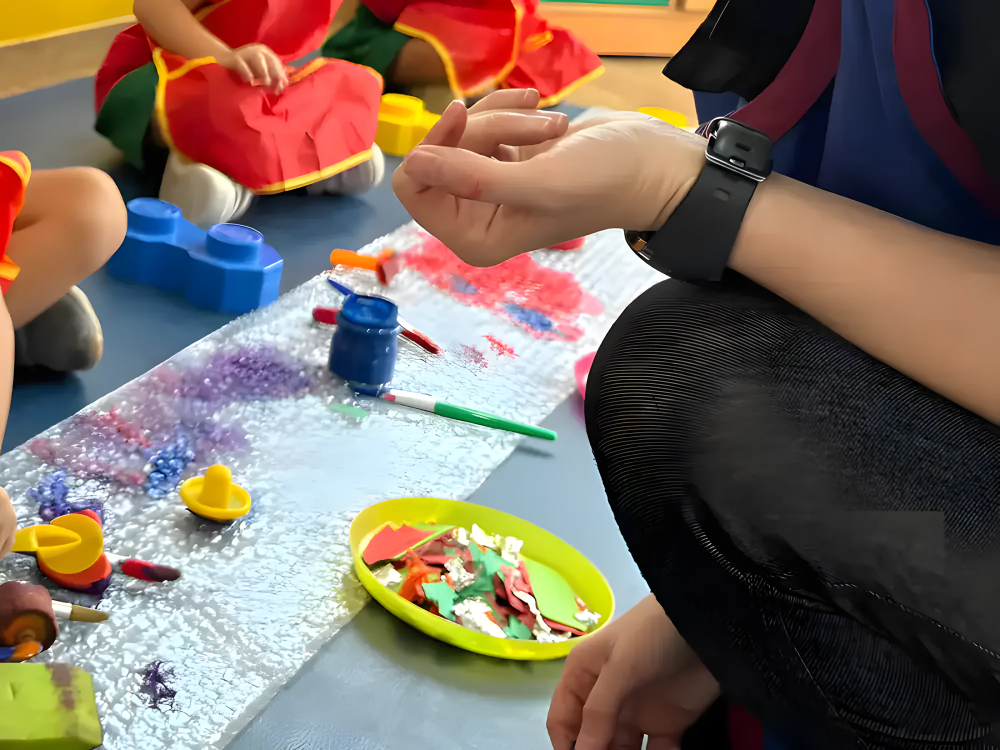
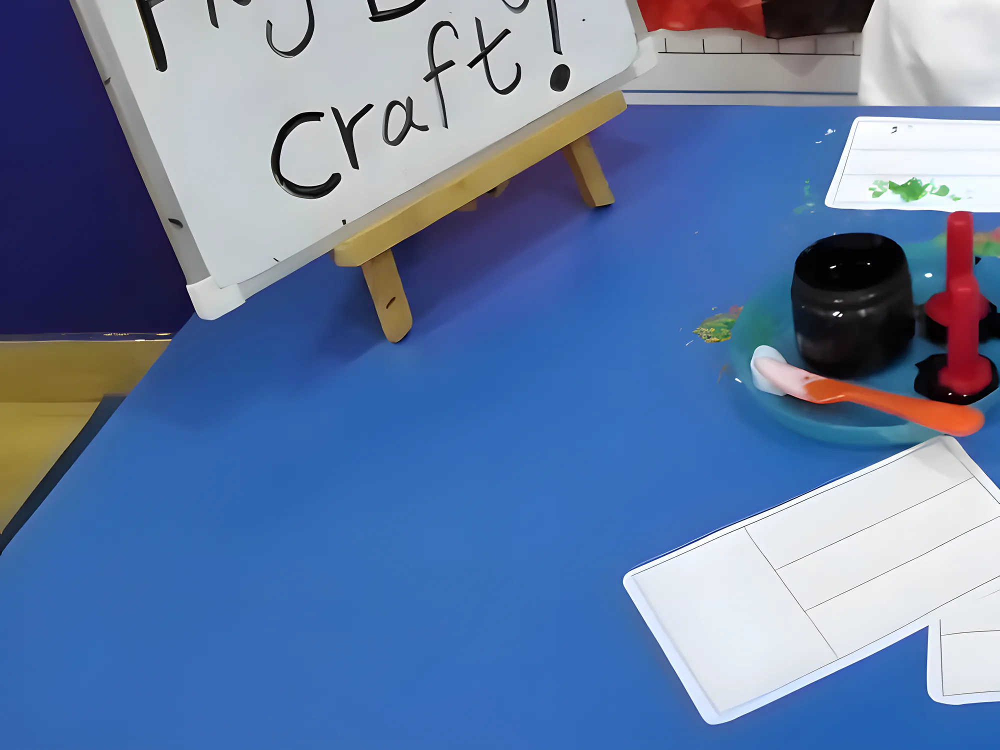
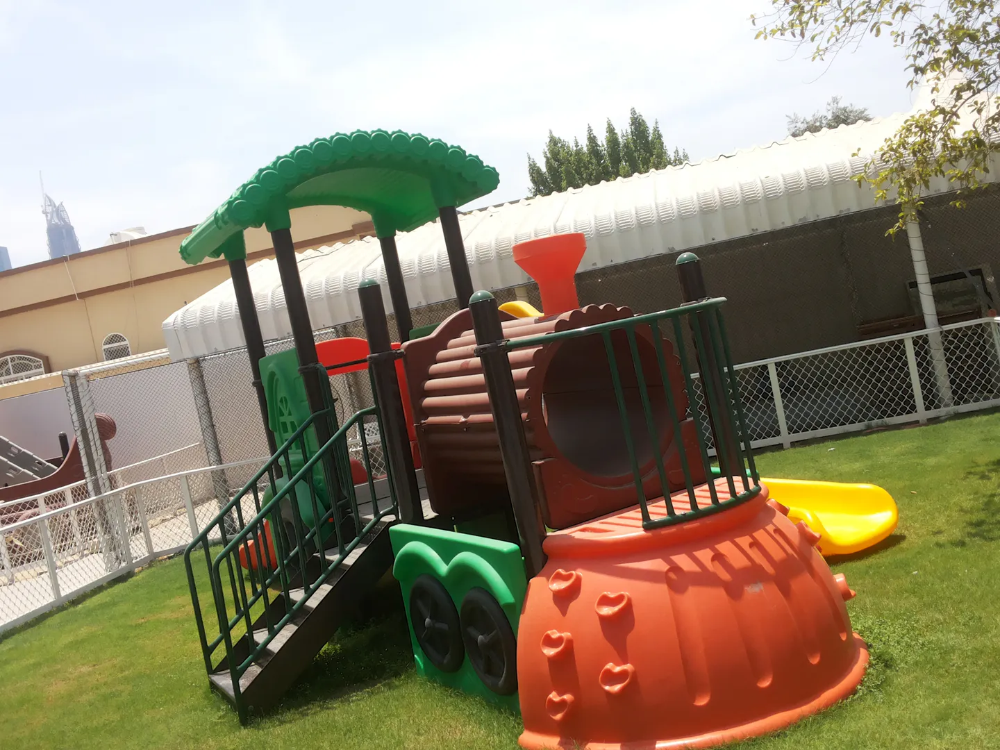
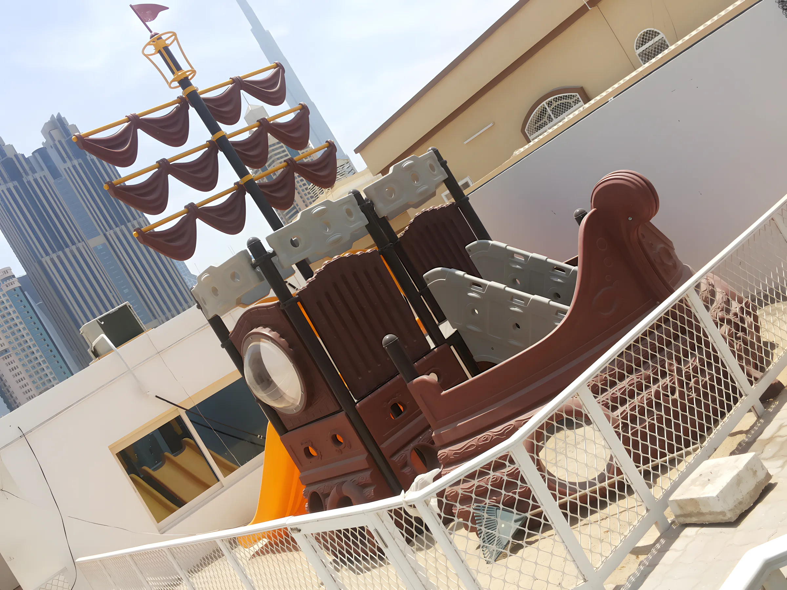

بريتشبيريزحضانة في البدع
حضانة بريطانية بمنهج EYFS في فيلا قرب شارع الشيخ زايد، من الولادة حتى ٦ سنوات. معتمدة من KHDA · منهج EYFS البريطاني




ماذا نقدّم
أكثر أربعة أشياء يسأل عنها الأهالي. اضغط على أي منها للتفاصيل، أو شاهد صفحة البرامج كاملة.
01من Pre‑Nursery حتى FS2منهج EYFS البريطاني
نتبع منهج المرحلة التأسيسية البريطاني. يتعلم الطفل باللعب: الحساب والقراءة المبكرة ومهارات التفكير تنمو من فضوله الطبيعي، في مجموعات صغيرة يُسمع فيها صوت كل طفل.
كيف يسير الصف
02الرعاية النهاريةمن الولادة حتى ٦ سنوات
رعاية للرضّع والأطفال الصغار في نفس الفيلا ومع نفس الفريق ونفس الساحة. الأهالي يقولون إن مواعيد التوصيل والاستلام مرنة؛ راسلنا على واتساب ونرتب معك ما يناسب يومك.
تفاصيل الرعاية النهارية03الدمج وعلاج النطق والسلوكداخل الحضانة
نحن بيئة دامجة. جلسات علاج النطق والسلوك تتم هنا في الحضانة، والمعلمات يخططن حسب احتياج كل طفل، فالطفل الذي يتأخر في الكلام يُدعم داخل يومه العادي لا خارجه.
الدمج في BBN04الرحلات والنزهاتمجموعات صغيرة
مشي في الحي، وحدائق، ومطاعم وهايبرماركت قريبة، وحديقة الحيوان وكيدزانيا. يخرج الأطفال في مجموعات صغيرة، تحت إشراف قريب ونعرف مكان كل طفل طوال الرحلة، ولا يخرج أي طفل دون إذن موقّع من ولي الأمر.
عن الرحلات




لعبة التسلق على العشب
ساحة لكل ركن فيها اسم
كل زاوية في الحديقة لها اسم يعرفه الأطفال. تسع مناطق في الخارج، وواحدة في الداخل.
- حديقة القلعة Castle Park
- محطة القطار
- منطقة المرور
- سفينة القراصنة والرمل
- ملعب Berries الرياضي
- استاد Berries لألعاب القوى
- المسبح
- حديقة الاكتشاف
- ركن رعاية الحيوانات
- Berry Kid’s Town في الداخل
داخل الفيلا
كل صف له موضوع وألوان مبهجة، وفيه أنشطة على الجدران وعلى الطاولات وعلى السجاد. كل الصفوف ومناطق اللعب مغطاة بكاميرات المراقبة، لتتابع الإدارة الأطفال بشكل أفضل.
- Berry Kid’s Townشارع داخلي بواجهات بيوت أوروبية
- ركن الموسيقىلوقت الموسيقى
- غرفة Berry Scienceغرفة يكتشف فيها الأطفال العلوم
- القاعة الرئيسيةحلقة الصباح تحت السقف المزخرف
القاعة الرئيسية، وتحتها Berry Kid’s Town.
منذ 2014 في البدع
محطات نفخر بها، بترتيب حدوثها.
- 2014التأسيسافتتحنا في البدع، قرب شارع الشيخ زايد
- 2016تخرّج أكثر من 250 طفلاً
- 2018أكثر من 1200 عائلة
- 2020منصة التعلم عن بُعد
كلام الأهالي
تقييمات بخمس نجوم على Google، كما كتبها الأهالي بالإنجليزية.
My son attends this school in FS one, being a Covid baby, he has speech delays and my wife and I were worrying about his development. British Berries has tremendously improved my son’s learning and understanding abilities where he is now able to follow complex instructions and attempt to speak.Our daughter started attending BBN last August. Although she’s still young to be in Nursery, we’ve never regretted our decision… In just three months at BBN, we’ve seen so much progress: her interaction, social skills, and motor skills have all improved greatly.This is the second year that my daughter is at British Berries. It is a wonderful place for her. She has developed her personality in a very independent and pleasant way. The nursery is flexible with pickup and drop off.I’ve seen my child flourish, gaining confidence, new skills, and making lasting friendships. Thank you to the entire British Berries team for your hard work, kindness, and for making every day a positive experience for my little one!My daughter has been attending the nursery for 6 months or so, we love it here! Ms Sonia is an amazing teacher doing a lovely job! The other staff is also very sweet and lovely always ready to help and be there!تفضّلوا بزيارتنا
فيلا 221، شارع 22D، البدع، السطوة، دبي
من شارع الشيخ زايد خذ المخرج 51A باتجاه جميرا. بعد النزول من الجسر، عند أول إشارة خذ اليمين الحر باتجاه السطوة، وبعد حوالي 50 متراً تجدنا على يمينك.